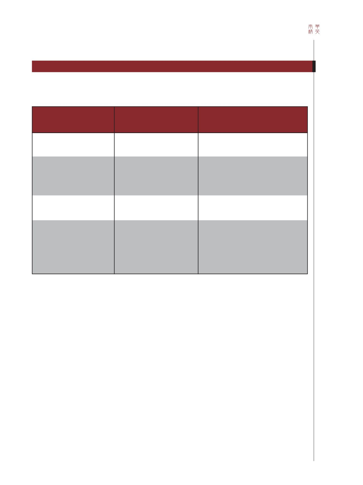

71 / 116
71 / 116


71
經濟週期由兩大部分及4個階段組成。第1部分是「高峰至
低谷」，包括衰退和蕭條階段。在衰退階段，商業活動及資產
價格均下跌，銀行在貸款方面變得更保守。在蕭條階段，人們
對經濟前景非常悲觀，不少企業破產，導致失業率上升。
第2部分是「低谷至高峰」，包括復蘇及繁榮階段。在復
蘇階段，企業開始擴展業務，失業率隨之下降。在繁榮階段，
企業收入上升，而租金則激增。此時，通貨膨脹導致所有商品
服務變得昂貴。圖1總結了經濟週期的各個階段。
在商務管理領域，大多數企業採用順週期策略。經濟環境
大好時，它們的現金流入量增加，並積極擴大業務。高峰過後
衰退來臨時，它們即面臨損失，並在蕭條階段結束某些業務。
不少過度擴展的企業，就是都在這個階段倒閉。事實上，這些
策略均以被動的態度應對經濟週期。
能夠在經濟衰退時存活下來，是企業得以發展的必要條
件。為應對經濟衰退及蕭條，企業須考慮逆週期策略。具體而
言，它們須在繁榮階段採取逆週期策略，包括：
1. 取得足夠的長期資金：經濟衰退時，企業盈利會較低
甚至虧本，亦難以獲得銀行貸款。此時，所有貸款人會變得極
為保守。假若企業預先以發行股票、債券或新增貸款取得足夠
的長期資金，它們便可安然地度過艱難時期。所有商品服務變
得便宜時，它們甚至有能力收購新資產並擴展業務。
2. 結束盈利較低的業務：在繁榮階段，企業可審視各業
務部門的盈利水平，並結束盈利較低者。這有助企業在經濟衰
退時期，節省大量現金流。
3. 收緊信貸額度：企業陷入破產的原因，不少都是因為
其債務人未能在經濟衰退時償還債務。為避免這種情況出現，
企業可在經濟衰退前審視給予客戶的信貸額度，亦可針對不太
可靠的客戶提供現金折扣。
TABLE
表
1
PROCYCLICAL CORPORATE STRATEGIES V COUNTERCYCLICAL CORPORATE STRATEGIES
企業順週期策略對企業逆週期策略
Stage of an economic cycle
經濟週期階段
RECESSION
衰退
DEPRESSION
蕭條
RECOVERY
復蘇
PROSPERITY
繁榮
Procyclical strategies
順週期策略
Keep less profitable operations
保留盈利較低的業務
Close down unprofitable businesses
Sell off businesses
結束盈利較低的業務
出售業務
Start to expand business
開始擴展業務
Expand business aggressively
積極擴展業務
Countercyclical strategies
逆週期策略
Acquire assets and expand business
收購資產並擴展業務
Close down less profitable operations
Arrange long-term funds (equity, bonds, loans)
Tighten credit lines
結束盈利較低的業務
準備長期資金（股票、債券及貸款）
收緊信貸額度
企業策略及經濟週期